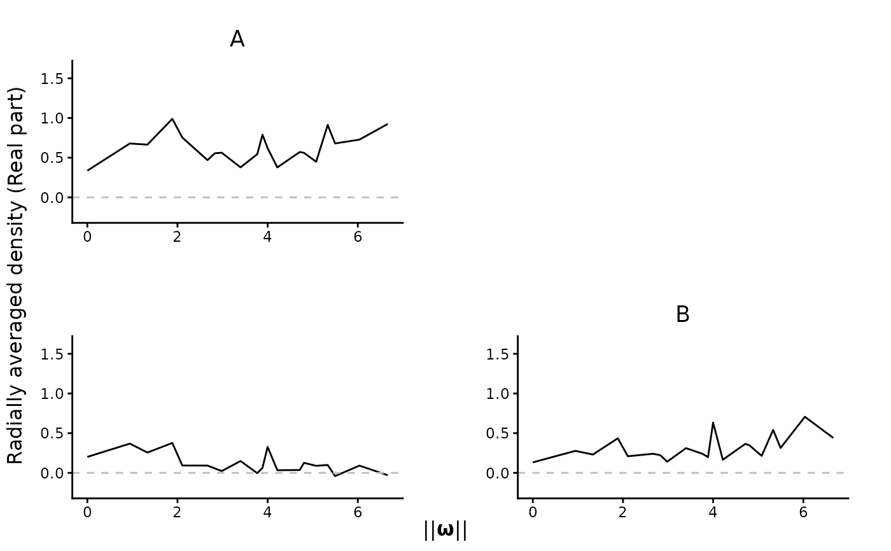
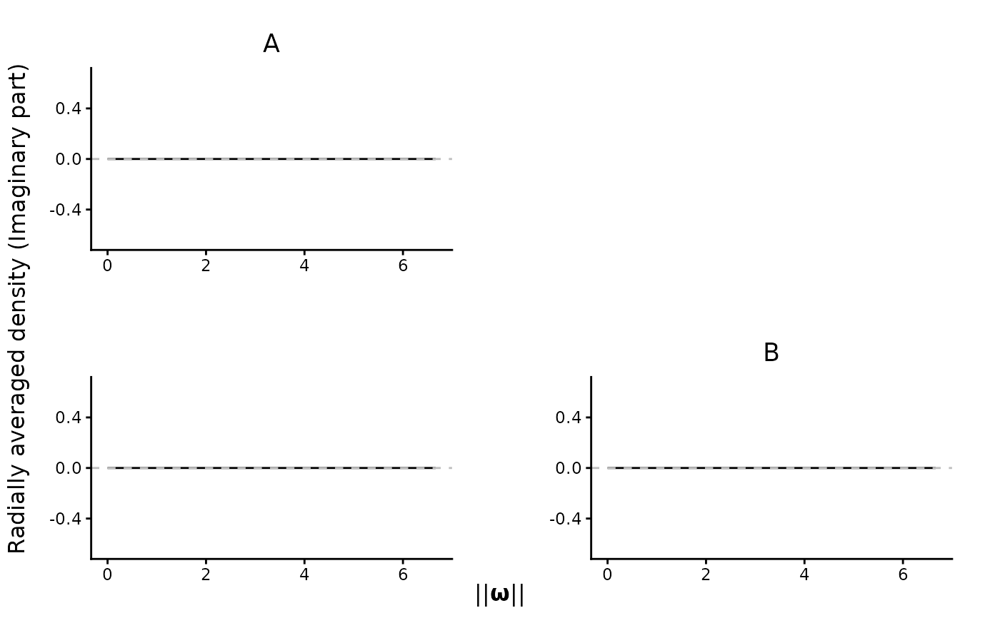
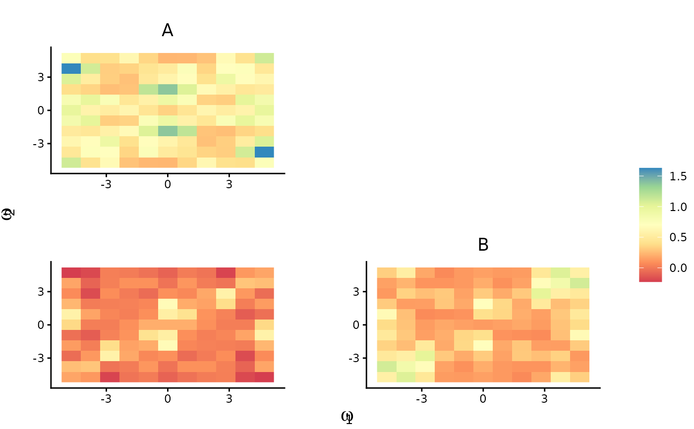
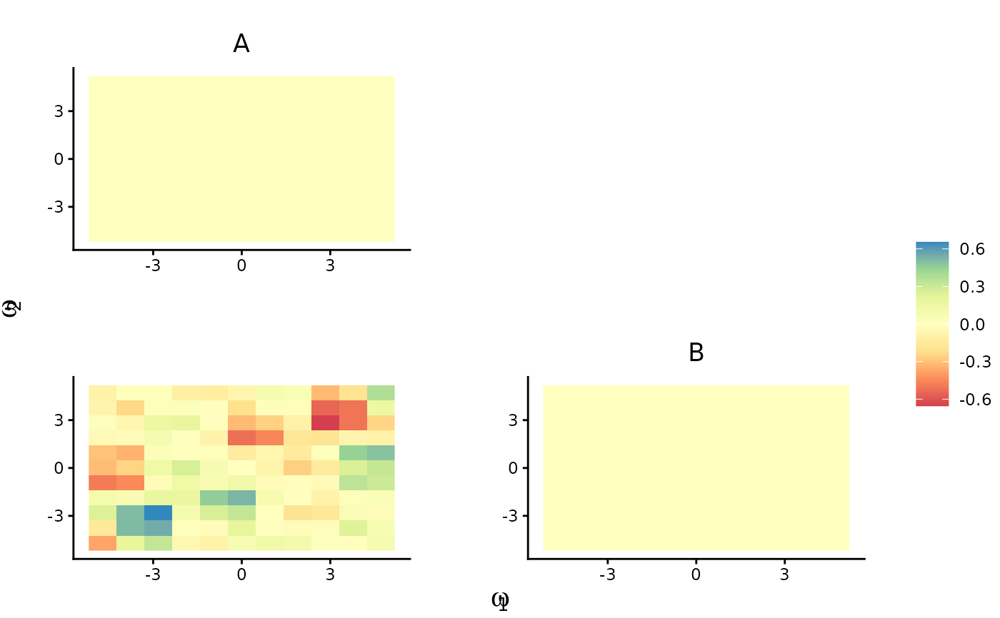

Given a multivariate (multitype) point pattern, use ggplot2 package to
visualize all (marginal and joint) spectral density estimates.
Arguments
- est.list
List. The kernel spectral density estimate from
periodogram_smooth().- ppp
A point pattern of class
"ppp".- xnorm
Logical. If
TRUE(default), plot the radially-averaged spectral estimates. Otherwise, plot the raw values by heatmap.- type
If
type = "Re"(default), plot the real part of the estimates. Iftype = "Im", plot the imaginary part.Logical. Whether to share the legend across all plots.
- remove
An experimental feature. Please ignore.
Examples
library(spatstat)
lam <- function(x, y, m) {(x^2 + y) * ifelse(m == "A", 2, 1)}
set.seed(227823)
spp <- rmpoispp(lambda = lam, win = square(5), types = c("A","B"))
KSDE.list <- periodogram_smooth(spp, inten.formula = "~ x + y", bandwidth = 1.15)
plot_pairs(est.list = KSDE.list, ppp = spp)

plot_pairs(est.list = KSDE.list, ppp = spp, type = "Im")

plot_pairs(est.list = KSDE.list, ppp = spp, xnorm = FALSE)

plot_pairs(est.list = KSDE.list, ppp = spp, xnorm = FALSE, type = "Im")
